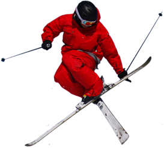

Duizenden jaren geleden werd het skiën uitgevonden in Scandinavië en Azië. Met de moderne variant van het skiën zijn we echter pas in Noorwegen begonnen rond het jaar 1850. ... In Zweden, Noorwegen en Finland zijn houten ski's gevonden waarvan gedacht wordt dat ze tussen de 2500 tot 5000 jaar oud zijn.
Veel Nederlanders gaan op wintersport. Snowboarden en skiën zijn de sporten die dan het meest beoefend worden. Meer dan 7000 jaar geleden trotseerden de nomadische volkeren in het hedendaagse Noorwegen en Zweden voor het eerst de met sneeuw bedekte bergen op de lange latten.
Meer informatie over skiën vind je hier
